Abstract : The goals of this lecture is to use the level set framework in order to do curve evolution. The mean curvature motion is the basic tool, and it can be extended into edge-based (geodesic active contours) and region-based (Chan-Vese) snakes.
path(path, 'toolbox_fast_marching/');
path(path, 'toolbox_fast_marching/data/');
path(path, 'toolbox_fast_marching/toolbox/');
cd toolbox_fast_marching
compile_mex;
cd ..
n = 200; % size of the image
% load a distance function
D0 = compute_levelset_shape('circlerect2', n);
% type 'help compute_levelset_shape' to see other
% basic curve you can load.
% display the curve
clf; hold on;
imagesc(D); axis image; axis off; axis([1 n 1 n]);
[c,h] = contour(D,[0 0], 'r');
set(h, 'LineWidth', 2);
hold off;
colormap gray(256);
% do the union of two curves
options.center = [0.15 0.15]*n;
options.radius = 0.1*n;
D1 = compute_levelset_shape('circle', n,options);
imagesc(min(D0,D1)<0);
% here we simulate a modification of the distance function
[Y,X] = meshgrid(1:n,1:n);
D = (D0.^3) .* (X+n/3);
D1 = perform_redistancing(D);
% display both the original and the new,
% redistanced, curve (should be very close)
...
% the gradient
g0 = divgrad(D);
% display the gradient (as arrow field with 'quiver', ...)
...
% the normalized gradient
d = max(eps, sqrt(sum(g0.^2,3)) );
g = g0 ./ repmat( d, [1 1 2] );
% display
...
% the curvature
K = d .* divgrad( g );
% display
...
Tmax = 1000; % maximum time of evolution
dt = 0.4; % time step (should be small)
niter = round(Tmax/dt); % number of iterations
D = D0; % initialization
for i=1:niter
% compute the right hand size of the PDE
...
% update the distance field
D = ...;
% redistance the function from time to time
if mod(i,30)==0
D = perform_redistancing(D);
end
% display from time to time
if mod(i,30)=1
% display here
...
end
end
| 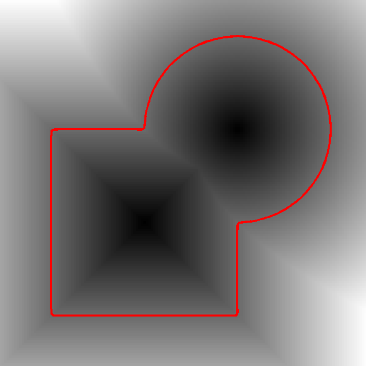 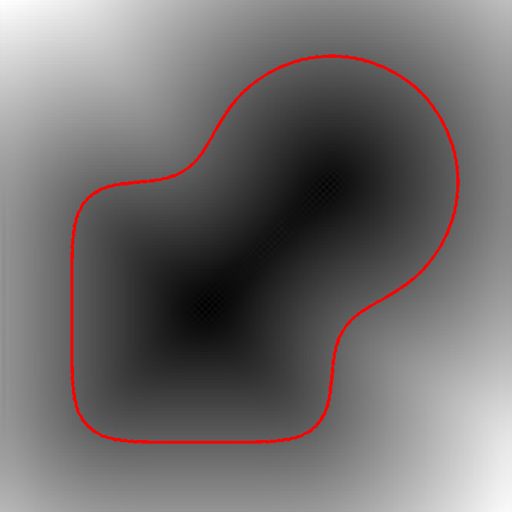 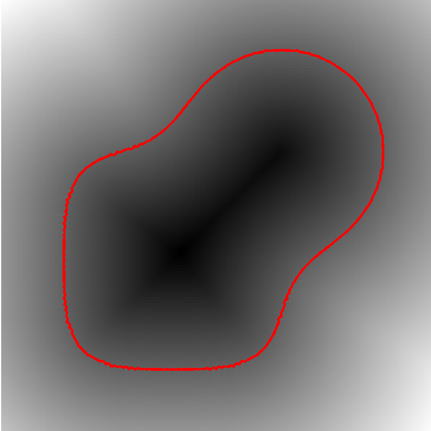 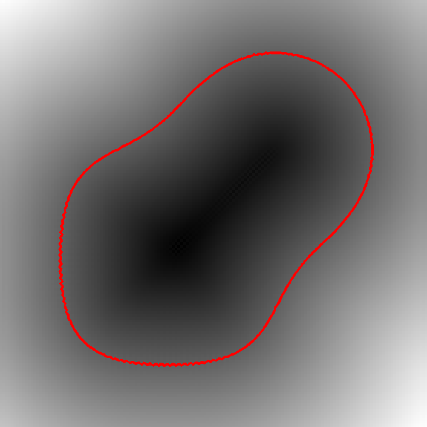 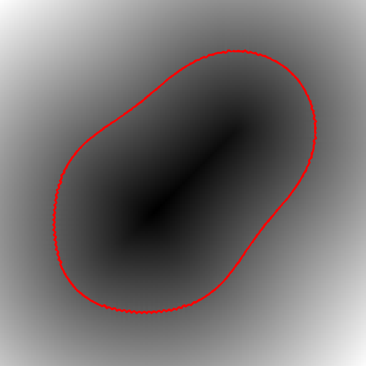 |
| Curve evolution under the mean curvature motion (the background is the distance function D). |
% load an image
name = 'brain';
M = rescale( sum( load_image(name, n), 3) );
% display it
...
% compute a smoothed gradient
sigma = 4; % blurring size
G = divgrad( perform_blurring(M,sigma) );
% compute the norm of the gradient
d = ...
% compute the edge-stopping function
E = ...
% rescale it so that it is in realistic ranges
E = rescale(E,0.3,1);
...
| 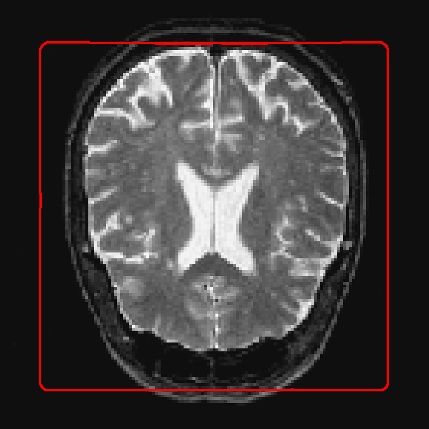 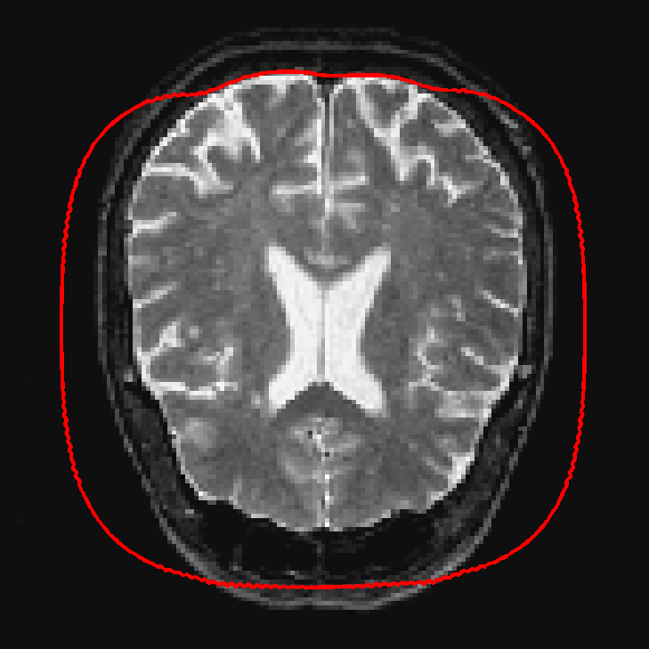 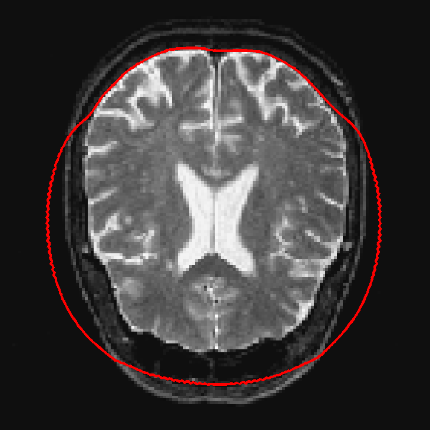 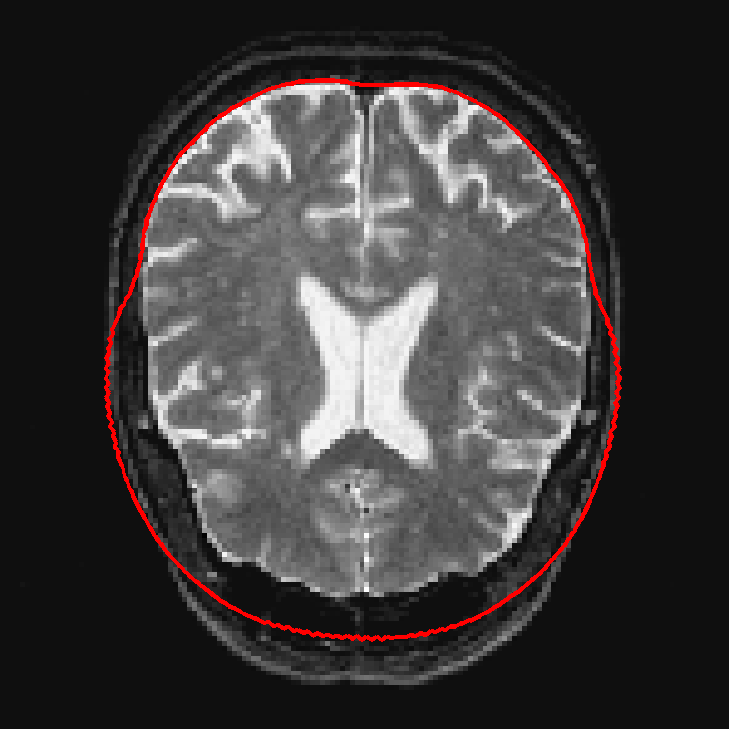 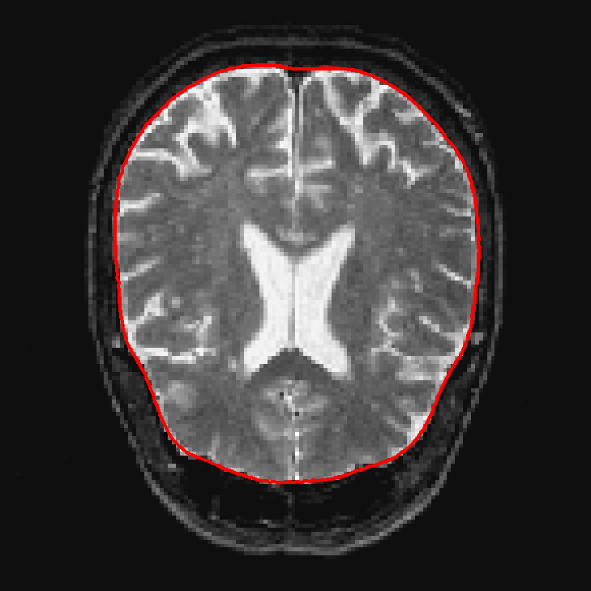 |
| Segmentation with geodesic active contours. |
% initialize with a complex distance function
D0 = compute_levelset_shape('small-disks', n);
% set parameters
lambda = 0.8;
c1 = ...; % black
c2 = ...; % gray
...
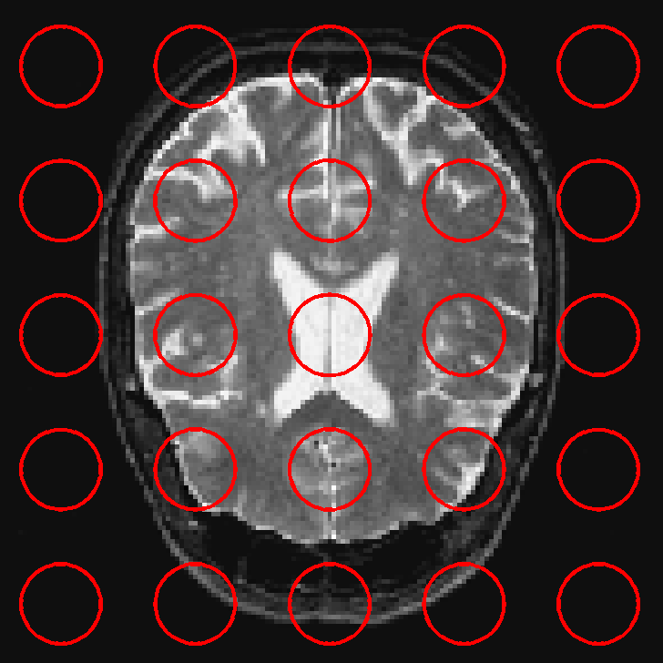 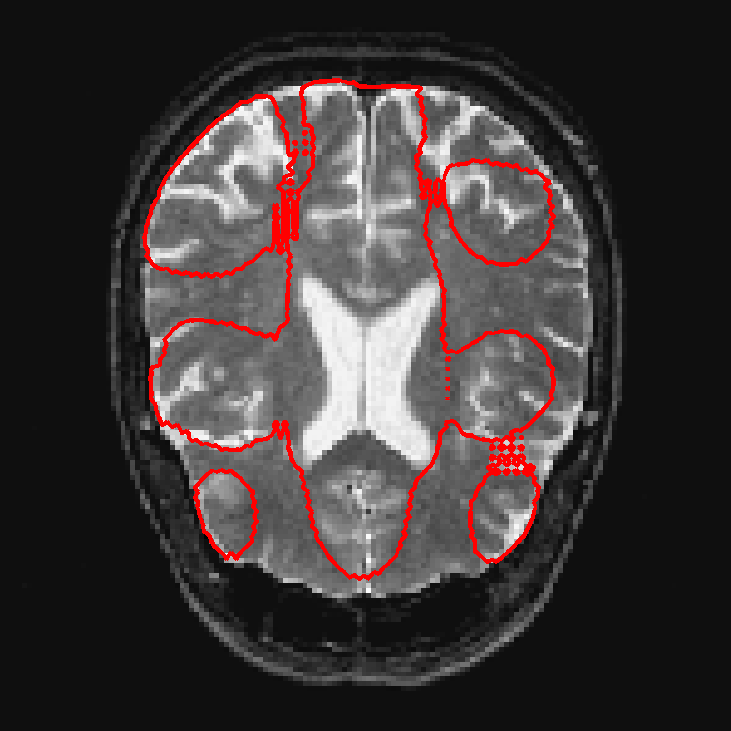 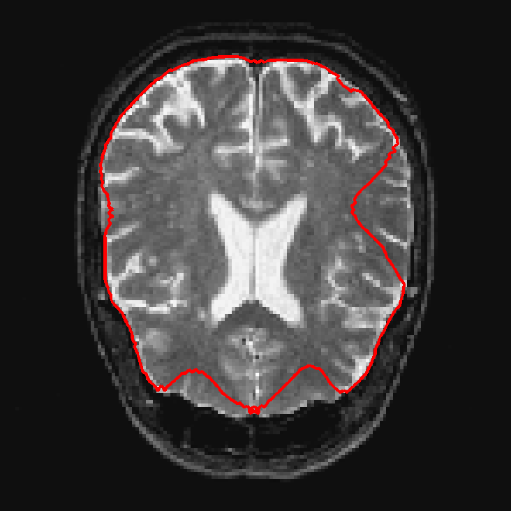 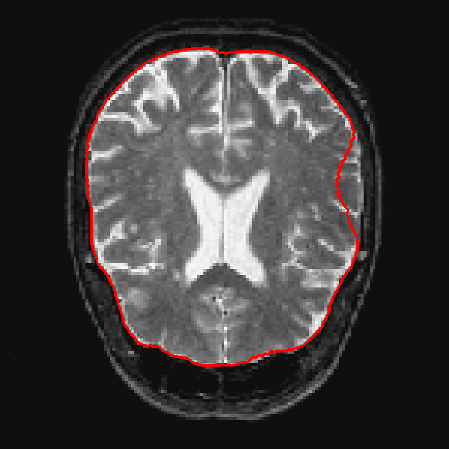 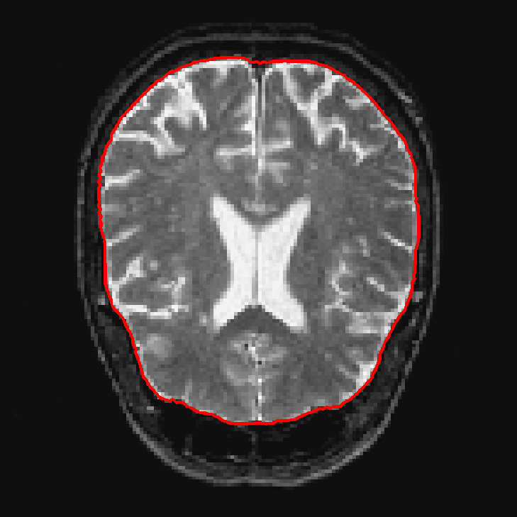 Segmentation with Chan-Vese active contour without edges.
Copyright © 2006 Gabriel Peyré